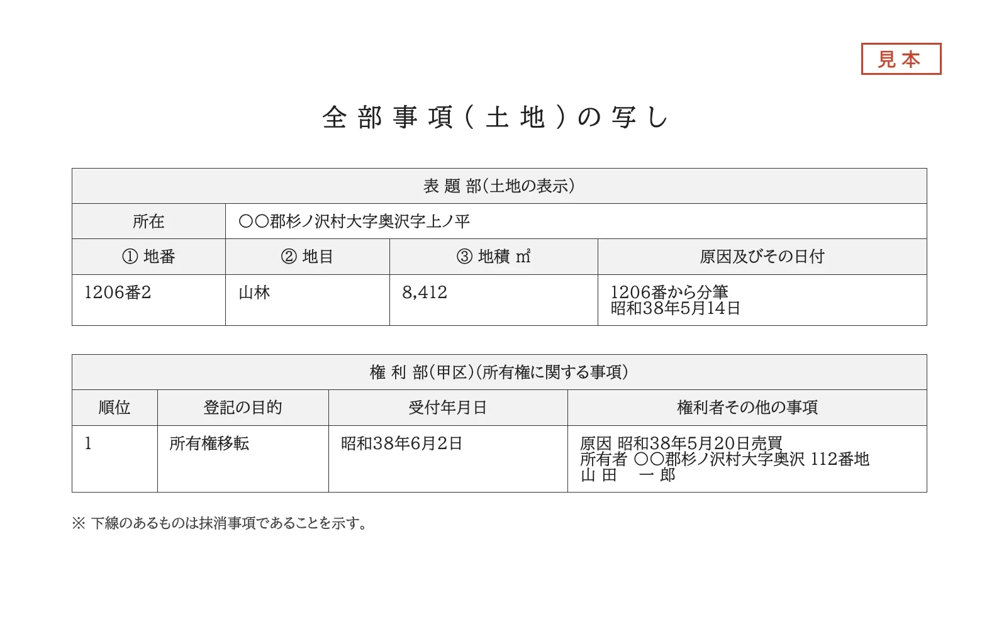
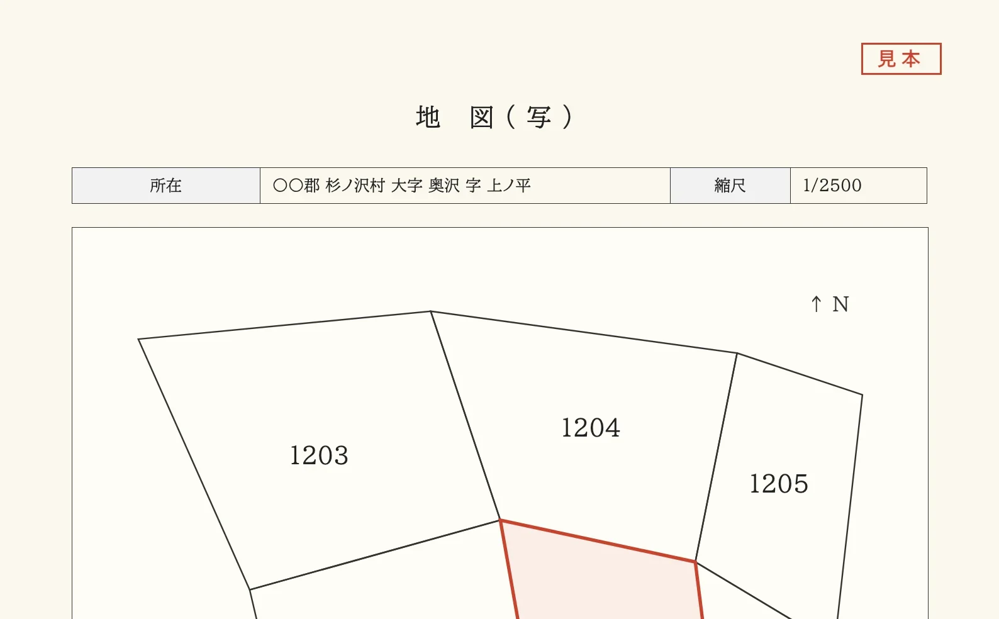
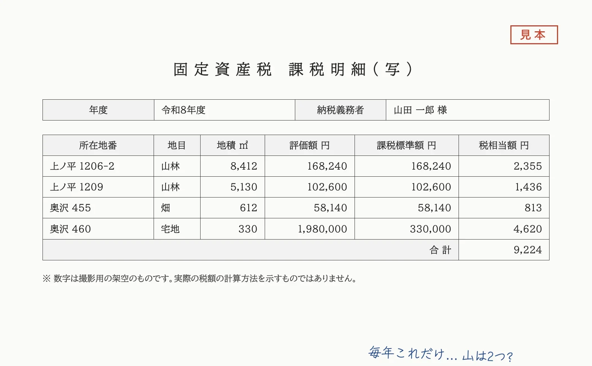
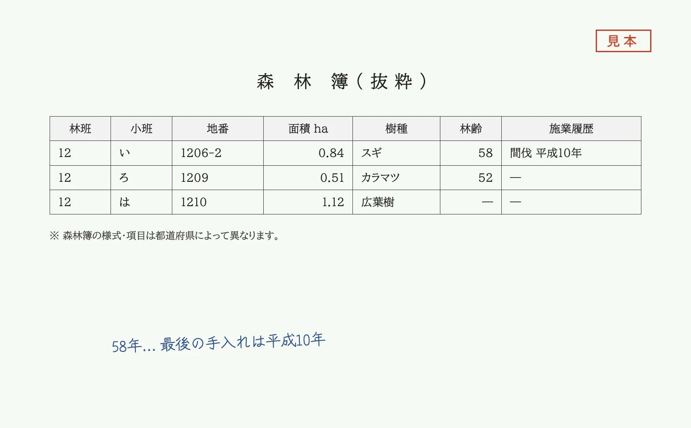

04私たちの考え方
売却を、
前提にしません。
- 持ち続ける・管理を頼む・譲る・売る。選択肢を並べてから考えます
- 不利なことも、先にお伝えします
- 引き受け手は、隣の方や地域の事業者も含めて探します
山林・里山の相続と管理のご相談 ― さとやま不動産
― 東京にお住まいの方からの、最初のひと言(例)
ご相談は、たいていこういう言葉から始まります。公図・登記簿・納税通知書。お手元の紙から、山の場所と名義と毎年の負担を、一緒に確かめていきます。

写真 A の仮置き(見本の書類)01よくある、最初のひと言
これまでに多い言葉を並べました。近いものはありますか。
02相談の机に出てくるもの
無くても大丈夫です。どこで取り寄せられるかも、一緒に確認します。

山の場所と形が分かる法務局で取得
いま誰の名義かが分かる法務局で取得

毎年の負担が分かる毎年、市町村から届く

木の種類と年齢が分かる都道府県・市町村に問い合わせ
03ご相談の流れと費用
初回のインタビューと整理メモは無料です。売却を前提にせず、分かること・分からないことを一緒に確かめます。
→ 次は公図で場所を確認
02 でお渡しするのは、こういう 1 枚です。ご家族と見ながら、この先どうするかを考える材料にしてください。
無料相談を申し込む →04私たちの考え方
05山林をお持ちの方以外にも
山の場所が曖昧でも、相談だけでも大丈夫です。全国からご相談いただけます。
お申し込みから 3 営業日以内に、担当者からご連絡します。
メール:(専用アドレスができたら掲載)